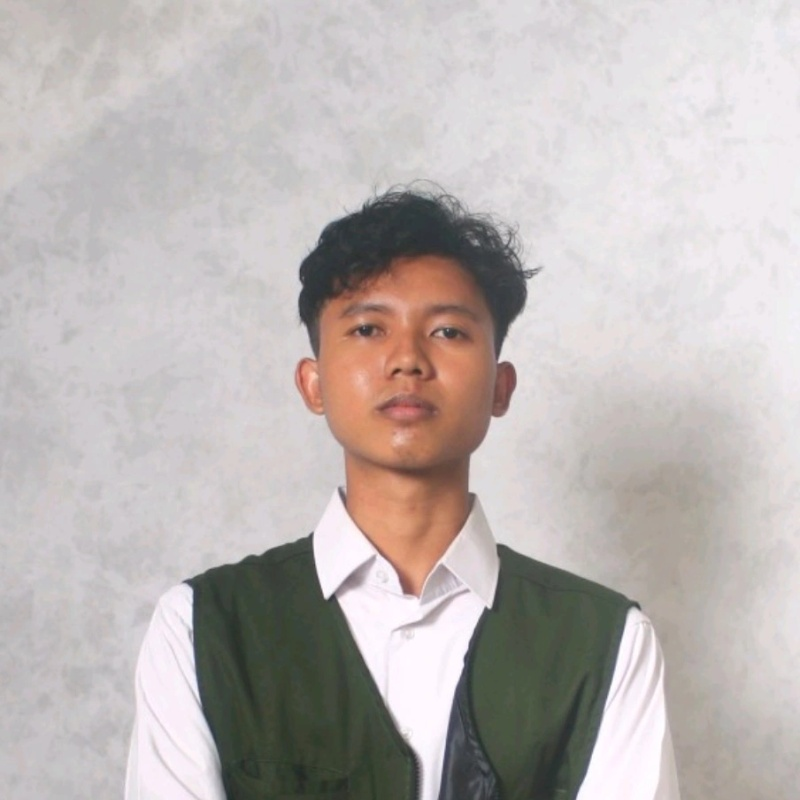

Hi,
I'm Irfan!
An Information Systems student with a strong passion for Data Science and Artificial Intelligence, building intelligent solutions from raw data that genuinely improve people's lives.
Projects
Warasin — Because Your Mind Matters
Platform berbasis AI untuk mendeteksi tingkat stres individu menggunakan data science berbasis gaya hidup dan pola tidur.
ReviewBPS
Sistem evaluasi kinerja pegawai berbasis web untuk BPS, mendigitalisasi proses penilaian kompetensi.
Stress Detection System
Sistem deteksi stres menggunakan data kesehatan tidur dan pengenalan ekspresi wajah dengan machine learning.
BPS Data Automation
Automasi pemrosesan dan pelaporan data statistik menggunakan Python untuk BPS Kabupaten Purworejo.
Experience
IPDS Intern — BPS Kabupaten Purworejo
Memproses, memvalidasi, dan mentransformasi data survei dan sensus. Mengembangkan automasi berbasis Python untuk efisiensi workflow pemrosesan data.
Data Scientist Cohort — Coding Camp powered by DBS Foundation
Program intensif 6 bulan di bidang Data Science, mencakup data preprocessing, exploratory analysis, model development, dan visualisasi.
Ketua Pelaksana & Koordinator — UKM RIPTEK UNNES
Memimpin berbagai acara organisasi termasuk TECHNODAY 2025, UNNESFAIR 2025, dan Open House. Bertanggung jawab atas koordinasi logistik, dekorasi, dan keamanan.

About Me
I'm an Information Systems student at Universitas Negeri Semarang (UNNES) with a strong passion for both Data Science and Artificial Intelligence. I love working with data, finding patterns that matter, and turning those insights into intelligent solutions that can genuinely improve people's lives.
My work sits at the intersection of AI and Data Science. I enjoy the full journey — from exploring raw data, uncovering patterns, and building machine learning models to deploying them into real, usable applications. I work comfortably with Python, Streamlit, and machine learning frameworks.
Beyond the technical side, I care about making AI understandable and accessible. The best model means nothing if the people it is built for cannot trust or use it. Currently sharpening my skills through real projects and collaborative work.
Education
Universitas Negeri Semarang (UNNES)
Information System — 2024 - Present